Goal: Location-based Push
Bonus: Complex Predicate-based Push
querying by location only is not very compelling on its own
| z, ? | toggle help (this) |
| space, → | next slide |
| shift-space, ← | previous slide |
| d | toggle debug mode |
| ## <ret> | go to slide # |
| c, t | table of contents (vi) |
| f | toggle footer |
| r | reload slides |
| n | toggle notes |
| p | run preshow |
Mikhail Panchenko, Surge 2012

My name is Pancakes.
acquired for spatial expertese and amazing slide templates
querying by location only is not very compelling on its own
image credit: russia today
famous quote.. well, famous if you're russian
this is a big issue - every device being sent to has to be looked up by its ID - key value read
team:blueslikes:beyoncedislikes:thekillerslikes:beyonce_dislikes:thekillers
another example: sports app - likes team, has these specific alerts turned on
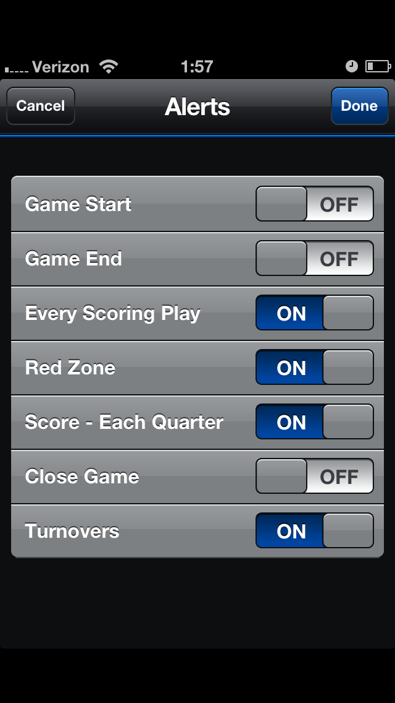
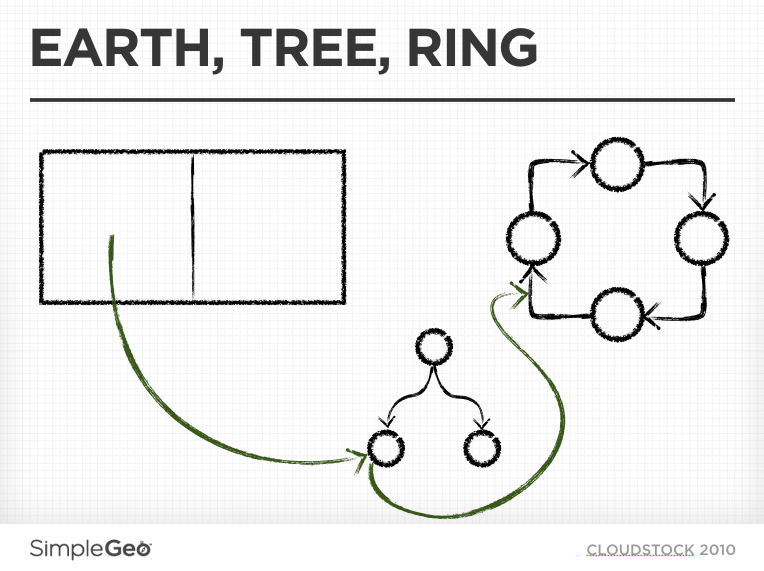
photo by carbonnyc
pro-tip: if you blanket set all your photos to Creative Commons license, some asshole will use them for presentations
photo by belsymington
not all RDBMSs will even do that, and the ones that do get really unwieldy at our data size
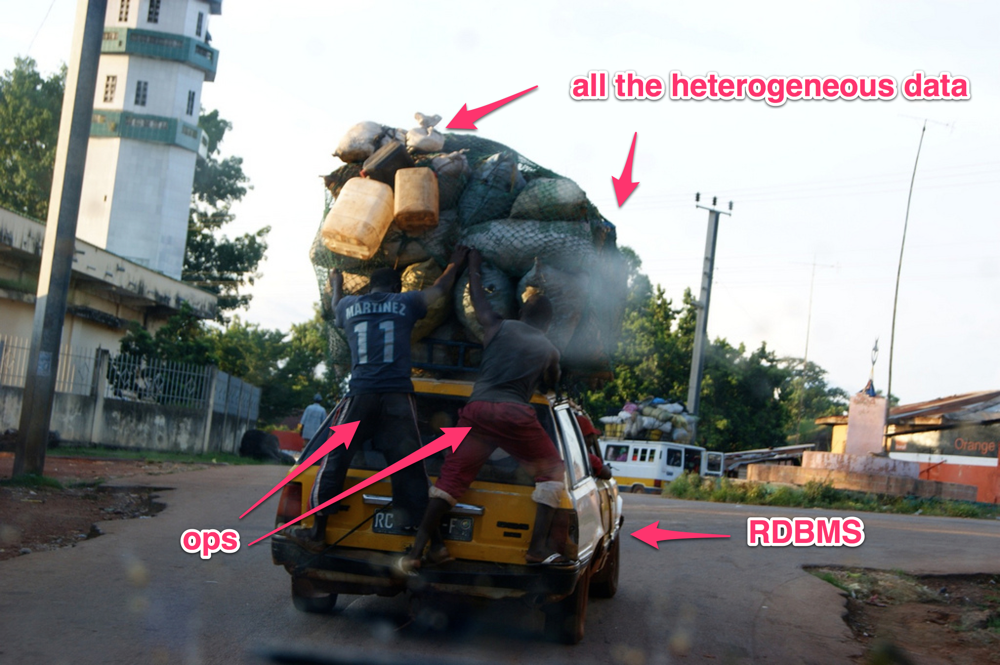
photo by belsymington
100MM installs, trending towards 1B. Most customers <= 10M, with a few notable, crucial exceptions
photo by theotter
credit: wikipedia
This appears to be a simple matter of programming
appId:deviceIdappId:deviceIdappId:deviceIdMost RDBMSs offer this in some form.
MySQL/InnoDB does it automatically for primary keys.
Data is stored on disk in index-order
Queries ordered on this index scan sequentially
This is important.
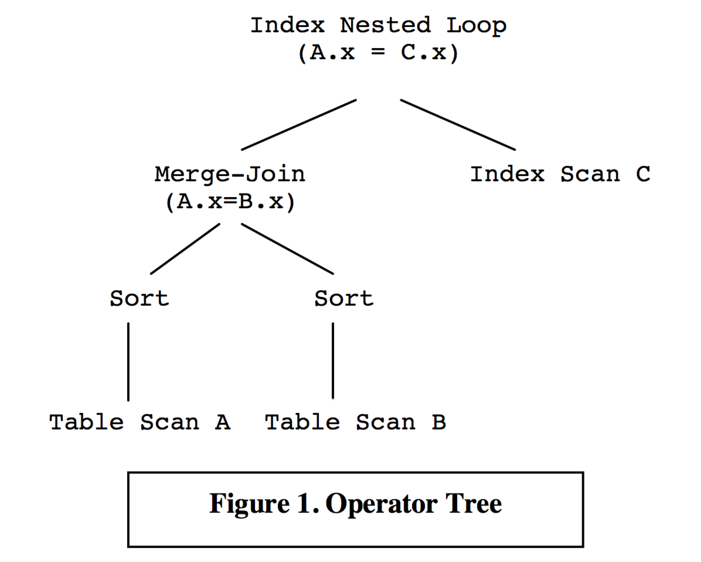
source: [ 1 ]

source: [ 1 ]
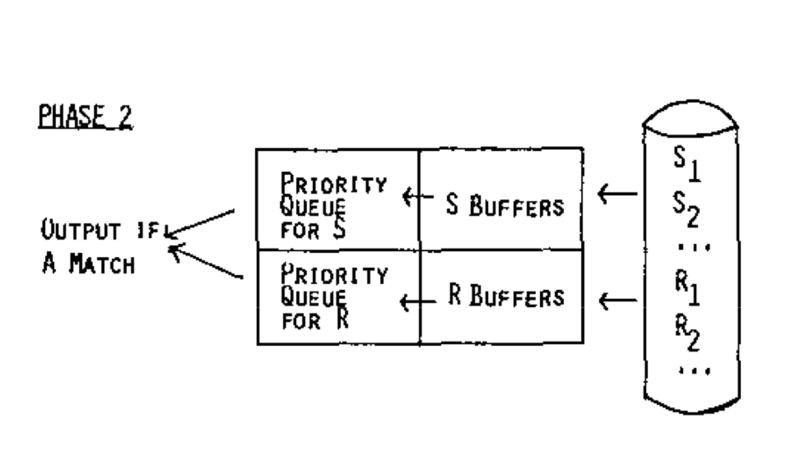
Basic Sort Merge Join Algo from [ 2 ]
photo by jessalyn
I'm never gonna eat all those pineapples
makes it seem like we'd have to try and implement the entire RDMBs query stack
those are actually quite different
force global ordering on disk, in queries. clustering can be taken for granted & we get to skip the "sort" in sort-merge-join
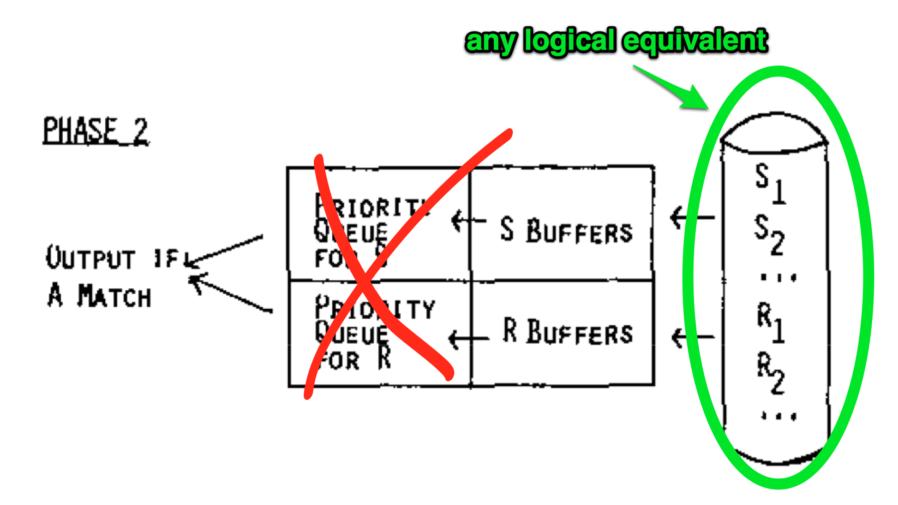
Basic Sort Merge Join Algo from [ 2 ]
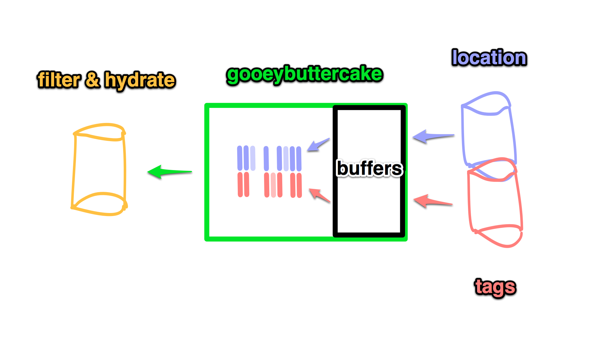
Datastores Connected By The Query Execution Service
putting a service in production called "gooeybuttercake" is my crowning achievement
photo by montage man
the way the UI is constructed makes it easy enough to just build a tree structure up front
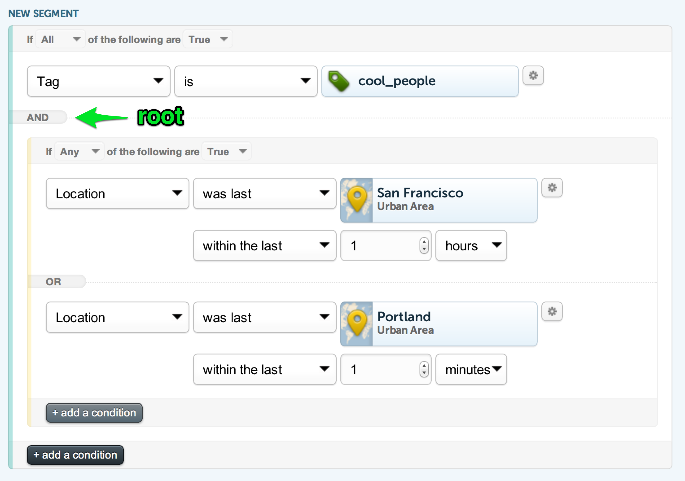
turns into JSON which maps to protobufs

photo by usnavy
this is a general phenomenon not specific to this project that we observe when we make something a lot faster. Talk about an unexpected side effect!
What I'm really saying: it's 9pm and I just realized that the logic for negation is completely incorrect. Also, yes, I know, this isn't specifically DeMorgans
photo by tehf0x
I have to use a photo because I can never recreate that exact expression
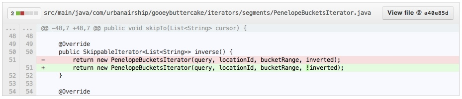
this diff is funny to me because it came after like 3 hours of debugging why NOTs weren't working correctly
due to an accident of history (the naive [) range parsing on our spatial index), the whole thing was built around iterators that can skipTo, not skipPast
0 aaaaaaaaaaaaaaaaaaaaaaaa
1 aaaaaaaaaaaaaaaaaaaaaaaa
2 aaaaaaaaaaaaaaaaaaaaaaaa
3 aaaaaaaaaaaaaaaaaaaaaaaa
4 aaaaaaaaaaaaaaaaaaaaaaaa
5 aaaaaaaaaaaaaaaaaaaaaaaa
6 aaaaaaaaaaaaaaaaaaaaaaaa
7 aaaaaaaaaaaaaaaaaaaaaaaa
...
1001 aaaaaaaaaaaaaaaaaaaaaaaa
your batch size is 1000, so you query 1000+1 and skipTo the 1001st result for the next page
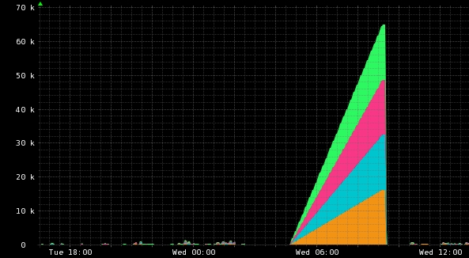
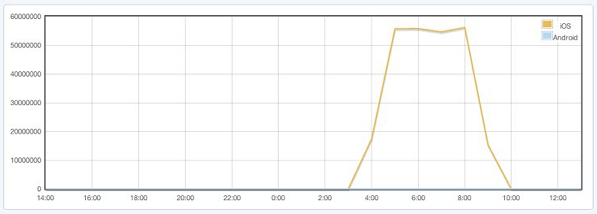
this is how you overheat an iPhone